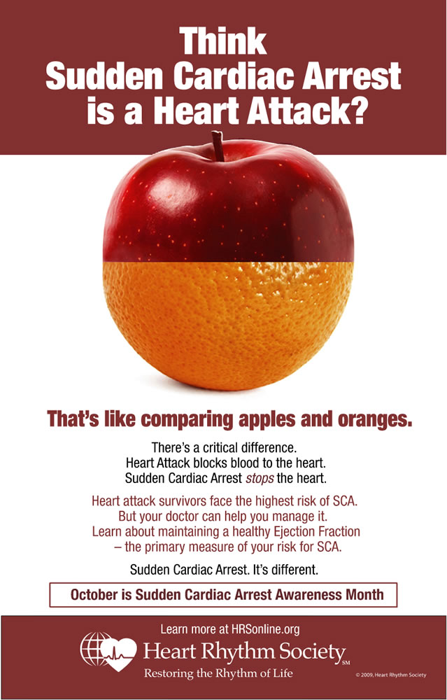
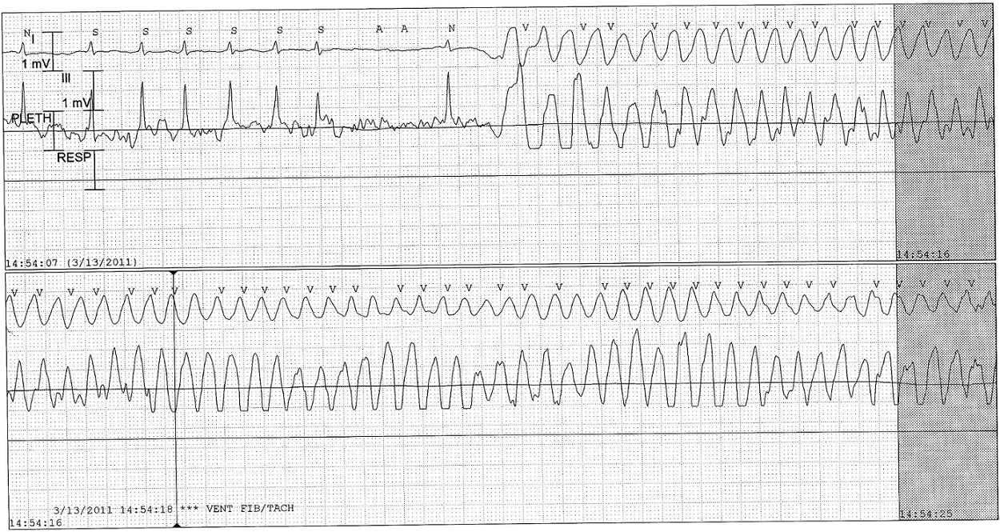
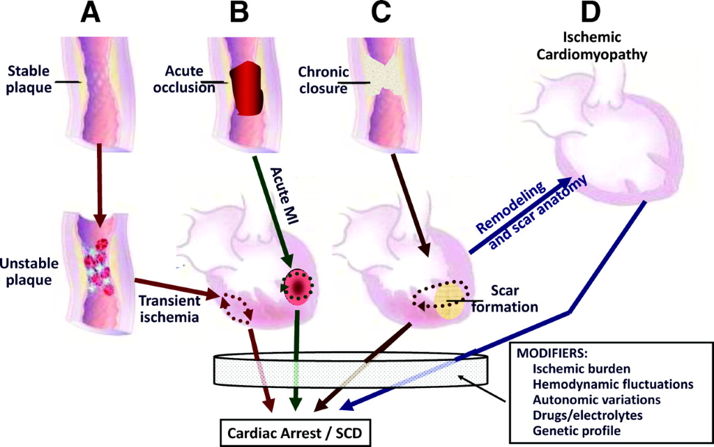
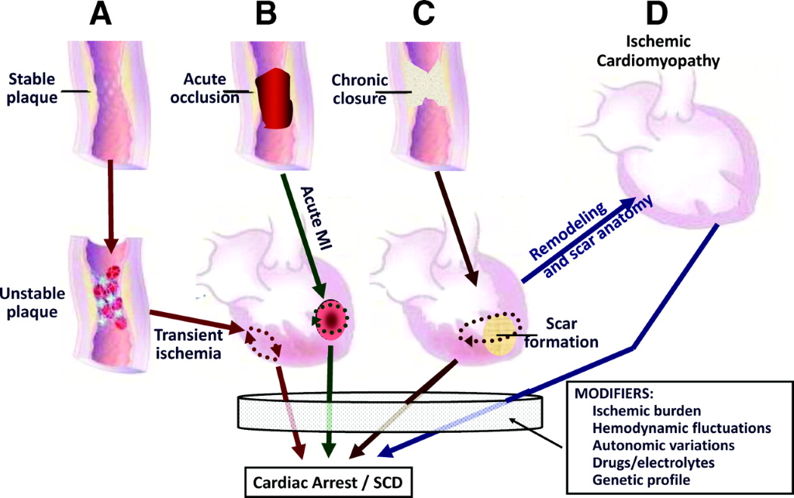

Sudden Cardiac Arrest
(SCA)
(SCA)
is a condition in which the heart suddenly and unexpectedly stops beating.
If this happens, blood stops flowing to the brain and other vital organs.
SCA usually causes death if it's not treated within minutes.
(NHLBI - Sudden Cardiac Arrest Health Topics)

Typical event begins with VT which later turns to VF,
and, if not treated, asystole and death.
More than
80%
of sudden cardiac death
started with ventricular arrhythmias.
80%
of sudden cardiac death
started with ventricular arrhythmias.
Mechanisms of production of fatal arrhythmia
Data from 157 ambulatory patients who died while
wearing holter monitoring devices.
refresh
3 millions
people around the world
died each year of SCD.
died each year of SCD.
In USA, SCD accounts for
more deaths each year
than the total number of deaths from
AIDS, breast cancer, lung cancer, and stroke.
than the total number of deaths from
AIDS, breast cancer, lung cancer, and stroke.
Ref: Josephson and Wellens. Circulation 2004.
courtesy: Medmovie.com
3 out of 4
SCDs are caused by coronary artery
with and without acute MI.
In an autopsy series of 1575 sudden unexpected deaths in Thailand, CAD was responsible for 44.7% of cases.
Ref: Byrne et al. Eur H Journal 2008 & Udnoon et al. Southeast Asian J Trop Med Public Health. 2009.

Pathophysiology of life-threatening ventricular arrhythmias caused
by coronary heart disease.

Ref: Myerberg and Junttilia. Circulation 2015.

Ref: Myerberg and Junttilia. Circulation 2015.